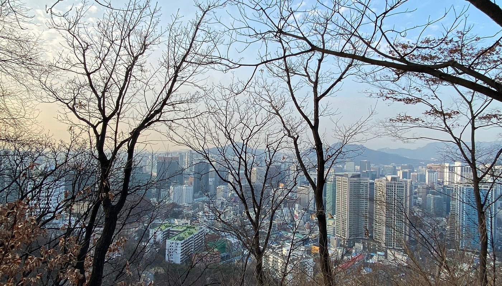
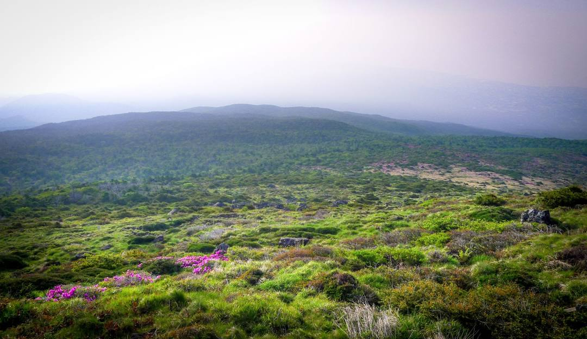

1. Namsan Park
Namsan Mountain Park, located at 231 Samil-daero, Jung District, Seoul, South Korea, is a popular destination for tourists and locals alike. It is the largest park in Seoul, and offers a tranquil, hilly forest with trails, an observatory tower, and a cable car. The park is open 24 hours a day, and admission is free.
2. Hallasan National Park
Hallasan National Park is located in the center of Jeju Island, South Korea. It is home to Hallasan, the highest mountain in South Korea, which rises to 1,950 meters (6,400 ft) above sea level. The park is known for its diverse ecosystems, including coniferous forests, alpine meadows, and volcanic landscapes. It is also home to a variety of wildlife, including deer, wild boar, and various bird species. Hallasan National Park is a popular destination for hiking, camping, and other outdoor activities.